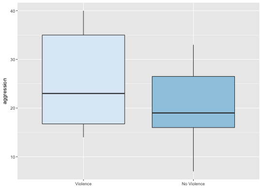

Data regarding the aggressive behavior in relation to exposure to violent television programs.
AGGRESSION
A data frame with 16 observations on the following two variables:
violence (an integer vector)
noviolence (an integer vector)
Gibbons, J. D. (1977) Nonparametric Methods for Quantitavie Analysis. American Science Press.
This is data regarding aggressive behavior in relation to exposure to violent television programs from Gibbons (1997) with the following exposition: “… a group of children are matched as well as possible as regards home environment, genetic factors, intelligence, parental attitudes, and so forth, in an effort to minimize factors other than TV that might influence a tendency for aggressive behavior. In each of the resulting 16 pairs, one child is randomly selected to view the most violent shows on TV, while the other watches cartoons, situation comedies, and the like. The children are then subjected to a series of tests designed to produce an ordinal measure of their aggression factors.” (pages 143-144)
Ugarte, M. D., Militino, A. F., and Arnholt, A. T. 2015. Probability and Statistics with R, Second Edition. Chapman & Hall / CRC.
AL <- reshape(AGGRESSION, varying = c("violence", "noviolence"), v.names = "aggression", direction = "long") ggplot(data = AL, aes(x = factor(time), y = aggression, fill = factor(time))) + geom_boxplot() + labs(x = "") + scale_x_discrete(breaks = c(1, 2), labels = c("Violence", "No Violence")) + guides(fill = FALSE) + scale_fill_brewer()rm(AL) with(data = AGGRESSION, wilcox.test(violence, noviolence, paired = TRUE, alternative = "greater"))Warning message: cannot compute exact p-value with ties#> #> Wilcoxon signed rank test with continuity correction #> #> data: violence and noviolence #> V = 118.5, p-value = 0.00479 #> alternative hypothesis: true location shift is greater than 0 #> #>